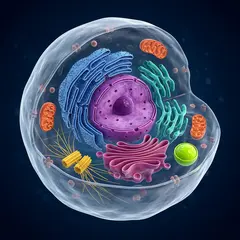

全景整个细胞
5 µm
示意图（AI 生成）Illustration (AI-generated)
真核细胞结构漫游：镜头依次飞进 8 个结构A tour of the eukaryotic cell: the camera flies into 8 structures

镜头会自动依次飞向 8 个结构，每站约 5 秒，然后回到全景循环。随时可以暂停，或点细胞上的发光点、站点列表、左下角定位图直接跳转。The camera flies to 8 structures in turn, about 5 seconds each, then returns to the overview and loops. Pause at any time, or jump straight to a stop by tapping a glowing dot on the cell, the station list or the locator map at bottom left.
点「讲解 Explain」或按 E 打开讲解抽屉：每站的要点、典型数值、活跃度和事件流都在里面，默认收起，让画面占满屏幕。右上角可切换 中 / EN / 中英。Tap “讲解 Explain” or press E to open the explanation drawer with each stop’s key points, typical values, activity bars and event log. It starts closed so the picture fills the screen. Switch 中 / EN / 中英 at top right.
键盘：← → 上一站 / 下一站，空格 暂停 / 播放，E 讲解，H 精简画面，F 全屏，Esc 关闭。手机上可以在画面上左右滑动换站。Keyboard: ← → previous / next stop, Space pause / play, E explain, H clean view, F full screen, Esc close. On a phone, swipe left or right on the picture to change stops.
老师小建议：全屏投屏后先暂停在全景，让学生猜每个彩色结构是什么，再用 → 逐站揭晓；最后对比一下：植物细胞多了细胞壁、叶绿体和大液泡，通常没有中心体。Teacher’s tip: project in full screen, pause on the overview and let students guess what each colored structure is, then reveal one stop at a time with →. Finish with a comparison: plant cells add a cell wall, chloroplasts and a large vacuole, and usually have no centrosome.
放大倍数按"屏幕约 9 cm 宽 ÷ 视野宽度"换算，比例尺按各结构的典型尺寸设定；pH、Ca²⁺ 等是教科书中常见的典型范围，不同细胞类型差别很大。ATP 曲线、活跃度条和事件流是示意动画，不是实时测量。图像是 AI 生成的示意图，形状和比例做了艺术化处理，不代表真实显微照片。Magnification is estimated as “screen width of about 9 cm ÷ field of view”, and each scale bar is set from the structure’s typical size. pH, Ca²⁺ and similar values are common textbook ranges and vary a lot between cell types. The ATP curve, activity bars and event log are illustrative animations, not real-time measurements. The images are AI-generated illustrations with stylized shapes and proportions; they are not real micrographs.
灵感来自 @thegreatest_sv 在 X 上分享的细胞动画；本页图像与代码为原创，示意图由 AI 生成。姊妹篇：神经元漫游 · 外泌体与细胞外囊泡漫游。Inspired by a cell animation shared on X by @thegreatest_sv; the images and code on this page are original, and the illustrations are AI-generated. Companion pages: Neuron Explorer · Exosome & EV Explorer.